System Architecture Of Tejas
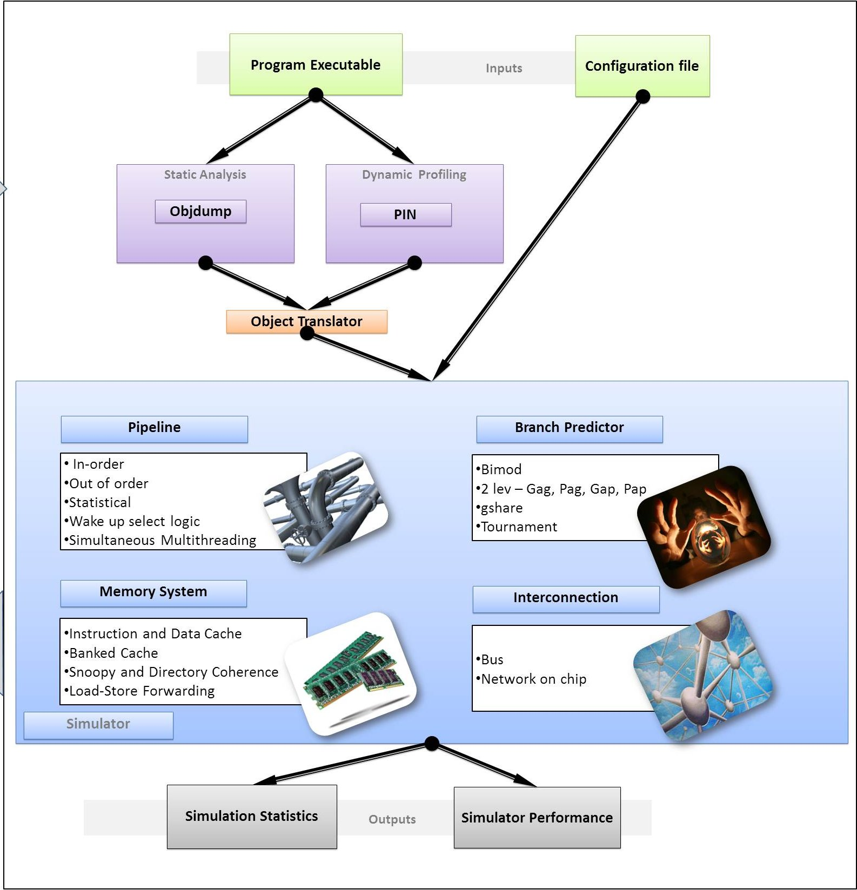
The Front-End : Emulator and Emulator-Simulator Interface
Typically, architecture designers use architectural simulators like SimpleScalar and SESC to implement their research ideas. The challenge with these simulators is that they are tightly coupled with an instruction set. SimpleScalar is based on Portable Instruction Set Architecture (PISA) and SESC is based on the MIPS instruction set. Both PISA and MIPS are not the most widely used instruction sets. To simulate a workload for this architecture on a standard x86 desktop machine, the user has to cross compile the benchmark for a specific ISA. From previous experiences, it has been found that cross-compiling standard benchmarks like Parsec and Splash2 for the MIPS and PISA instruction set is tough. Even after cross compilation, we do not retain all the architectural optimizations that a compiler would have performed for the desired architecture.
The Tejas architecture, on the other hand, does not place any constraint on the ISA of the benchmark. The simulator effectively translates the emulated instructions to VISA instructions and simulates these. The entire process is elaborated below.
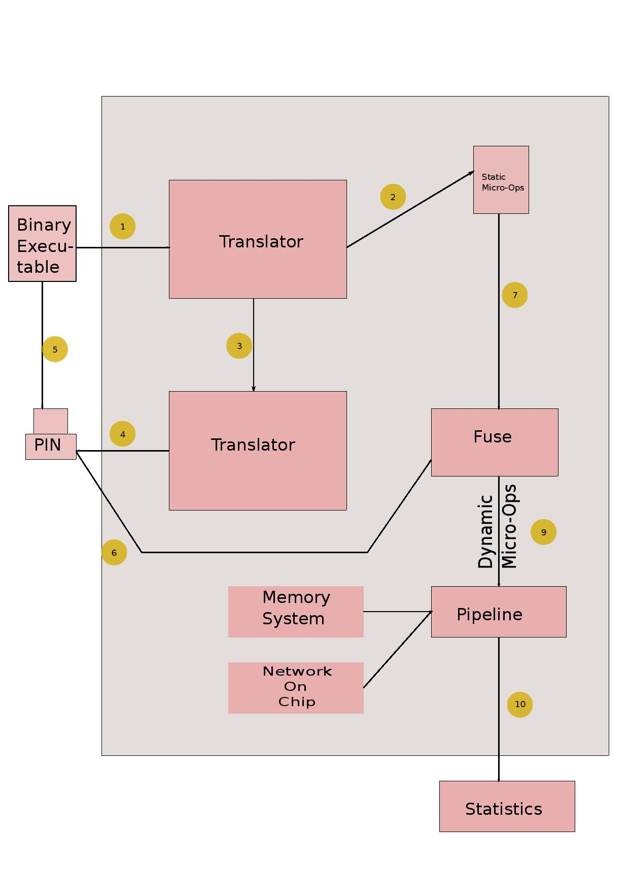
The figure above will help explain the emulation-simulation interface. We first disassemble the input executable (for x86, the help of the GNU objdump utility was taken). The disassembly information is fed to a translator module which sets up a mapping between instructions in the executable to VISA micro-ops. We then emulate the benchmark -- for x86, we use Intel PIN for instrumentation. Useful information like branch outcomes, load/store addresses and thread start/stop are sent to the simulator via the communication medium (typically shared memory). The simulator uses the mapping to translate to VISA micro-ops, which are then passed through the simulated micro-architectural structures.
Currently support for x86 is provided. The simple plug-and-play architecture of Tejas will allow easy adding of translators for other ISAs.
CausalityTool is the custom PIN instrumentor that provides the simulator with the dynamic execution trace.
thread_start and thread_finish : Thread start function is called at the start of each thread. It assigns an appropriate communication channel ID for the corresponding thread. We specify the maximum number of threads as a configuration parameter to Tejas. Thread start function also checks if the total number of threads has not crossed this limit. Thread finish function safely closes the communication channel of the thread and decrements the total number of active threads in the application.
instruction : This function is invoked for each instruction. It checks the type of instruction and sends appropriate instructions properties (branch, load/store address, instruction-pointer) to Tejas over the communication channel.parallelOperations : The simulation of multi-threaded applications requires instrumentation of thread communication operatives like barrier and broadcast.
startInstrumentationFunction and endInstrumentationFunction : Often, instead of simulating the entire benchmark, we are interested in only specific regions of it. We have added support in the PIN tool to toggle ON and OFF the instrumentation of benchmarks after the invocation of particular functions (configurable).
Speed of causalityTool:
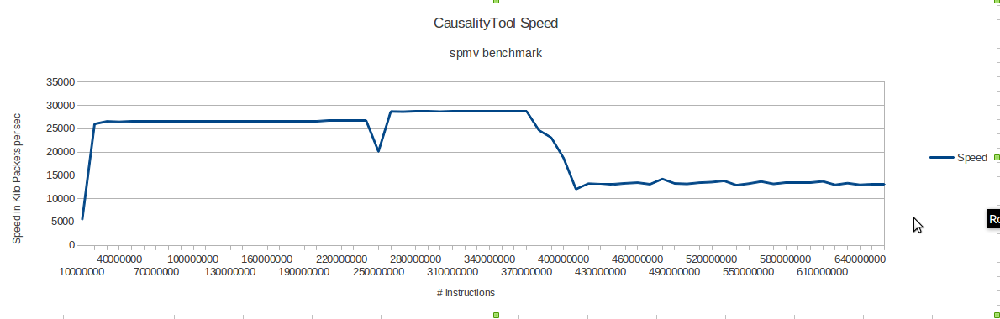
Communicating the Trace to the Simulator
All the application threads run in parallel, and potentially generate gigabytes of data per second. It is necessary to send all of this data to Tejas using a high throughput channel. We evaluated several options – shared memory,memory mapped files, network sockets, and Unix pipes. Unix pipes were found to be the slowest of all. Hence, we ceased to consider them early in our design process. As an experiment, we wrote a small compute intensive loop based benchmark. For this experiment, we measured the time that it takes to transfer 1 GB of data from PIN to Java. Since we have finite buffers, we need a method for the consumer(Java thread) to indicate to the producer(PIN) that it cannot accept more packets for the time being.
In the case of sockets, we use a dedicated socket from the consumer to the producer, and for shared memory or memory mapped files, we use shared variables to indicate the status of the consumer. Figure shown below gives the results about comparison of various inter-process communication mechanisms.
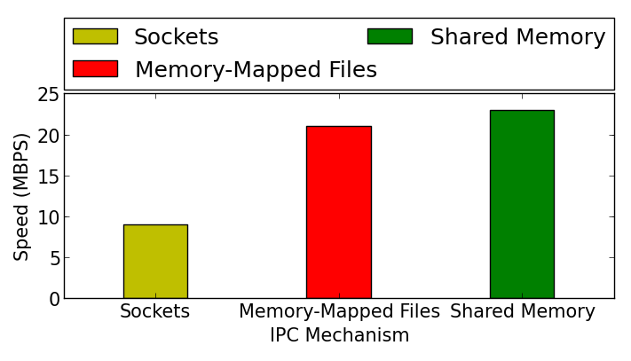
We observe that sockets are the slowest (10 MBps). This is because they make costly system calls to transfer data across the processes, and buffering is done by the kernel. However, they are also very versatile. We can run the application threads on one machine, and run simulator threads on another remote machine. For high throughput, shared memory is the best option (24 MBps). Communication with memory mappedfiles is slower, because we need to synchronize data with the hard disk, or the disk cache in main memory.
Shared Memory
We use the shmget and shmat calls in Linux to get and attach shared memory segments to the PIN processes. Since the number of segments are limited, we use a single shared memory segment. For n application threads, we split the shared memory segment into n separate contiguous regions. The structure is shown in the diagram below. Each region contains a header, and a circular queue. We fix the size of each packet to 192 bytes, and allocate space for 50 packets in each circular queue. The header contains the status of the thread, the number of outstanding packets in the queue, and its start and end locations.
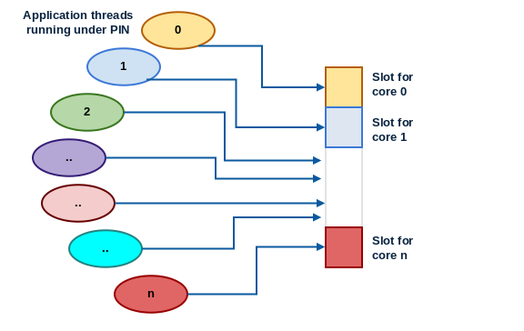
The important point to note here is that the custom functions in PIN are written in C++, and the simulator threads are written in Java. There is no support for Linux shared memory segments in Java. Hence, we use the Java Native Interface (JNI) to access shared memory. It allows us to write code in C that can be linked to the JVM in runtime. The second issue is that of locking. We need to be able to get locks to update the pointers to the circular queue, and the count variable. We use a Peterson lock optimized for the Intel x86 TSO (total store order) memory model. The code shown below implements a Peterson Lock for TSO systems with three fences (hardware and compiler).
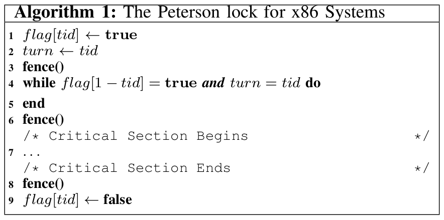
Gigabytes of data generated by the application threads has to be received by Tejas via a feeder engine which is responsible for transferring instruction packets to the translation engine. We use a single JNI call, memcpy(void∗, const void∗, size t), to copy an entire memory area into the address space of Java threads. Secondly, note that Java is big-endian while Intel x86 is little-endian. JNI handles this by providing its own datatypes such as jint, and jlong. While transferring values to the JVM, JNI routines seamlessly convert little endian values to big endian values.Several problems were faced during the construction of the feeder engine.
VISA (Virtual Instruction Set Architecture)
The VISA instruction set is fairly abstract, and it has sufficient information to perform a timing simulation. It is not concerned with different behavioral aspects of the instruction set. Almost all major architectural simulators break down emulated instructions into a simpler instruction set. We support four different type of operands - integer register, floating point register, immediate value and memory operand. A memory operand can have an integer register and an immediate value as sub-operands. We support three different operations on integer and floating point operands - ALU, Multiplication and Division. Load can fetch a value from memory into an integer or floating point register. Jump represents an unconditional transfer control to a different point in the program, whereas branch uses a conditional statement.
Coverage of Translator
The translator module of the simulator has to map different instruction sets on VISA. A CISC instruction set like x86 contains hundreds of instructions. Mapping all instructions to VISA will result in large mapping tables, thereby slowing the simulator down. However, some instructions are rare and they do not fall in the architecturally significant domain. Hence, we chose to translate a large number of most commonly used instructions in the given instruction set architecture. Since, the program execution is performed on a different emulator like Qemu or a native machine, we always have a correct flow of the application.Thus, can afford to skip some instructions in order to keep the design of the simulator, simple and scalable. The skipping of certain instructions in the executable can cause incorrect results if we skip the commonly occurring instructions. We have defined metrics; namely static coverage and dynamic coverage of the translator to measure its completeness.
Static Coverage of the translator is the fraction of instructions in the object executable that could be translated into VISA. We also define the Dynamic Coverage of the simulator to the fraction of dynamically executed instructions that were translated to VISA. The Dynamic Coverage of the simulator will reduce if a certain non-translated instruction was executed in a loop repeatedly. We have noted that the coverage of the translator for i386 instruction set is above 95 % for most of the benchmarks. The formula for dynamic coverage does not cover complex instructions like rep. However, while comparing the translated instructions with the execution trace, we found that the number of such instructions was comparatively less.
The VISA micro-ops are fed into the pipelines of the simulated cores through queues.
- Due to the difference in speed of the production and consumption of packets, pipelines of many cores go empty for many cycles. This difference causes variability over several executions. This gives instability in IPC over several executions of the same benchmark. To counter this problem, we maintained a record of the live application threads and kept track of the packets being received from the communication medium. If the pipeline of any of the core goes empty, then all the pipelines wait for that pipeline to get filled. This helps in the stabilization of IPC as we execute any cycle when all the pipelines have atleast one instruction to execute.
- In case some application thread is stuck due to a synchronization primitive, like waiting on a lock, signal or barrier, then all other threads were getting stuck along with that thread after implementation of case 1. This sometimes resulted in a deadlock situation, as other threads were waiting for the stuck thread's packets to come up while the thread which is stuck is waiting for some thread to release the lock(or any similar case). This creates a circular waiting condition. To counter this condition, we instrumented function_enter and function_exit on the emulator side and send packets over the simulator side to tell that a particular thread has entered a synchronization call and it may get stuck. After receiving such packet, we do not count that thread as live till we receive a function_exit packet for that thread for that particular synchronization call.
The Back-End : Simulating the Micro-Architectural Structures
The translated VISA micro-ops are now passed through the various micro-architetcural structures being simulated. This section will detail how the different components are implemented in Tejas.
Semi-Event-Driven Model
Simulation of hardware as a single thread of execution is traditionally done in an iterative manner. Each structure in the system is advanced through one cycle in every iteration. The other alternative is an event-driven approach. A priority queue of events (state changes of structures) is maintained, and the events are serviced in increasing order of time.
An event-driven model is attractive as not every structure undergoes a state change every cycle. At the same time, an event-driven model requires a priority queue, a structure whose maintenance has non-trivial performance implications. Experimentation led us to chose a semi-event-driven model :
Architecture Specification
Tejas is quite flexible when it comes to specifying the architecture. The system is simply a collection of cores, the memory heirarchy and the inter-connect. Any number of cores may be simulated -- we have experimented extensively with 128-core systems and have not faced any serious performance issues.
A core is essentially a pipeline with some private cache memory. Different types of pipelines are implemented, that are highly configurable. Great flexibility is provided in specifying the memory system. The network on chip implementation provides a variety of topologies and routing algorithms.
Importantly, the addition of new features -- say a new type of pipeline, or a different branch predictor, a novel cache replacement policy, NOC topology or routing algorithm -- can be done relatively easily owing to Tejas' modular structure.
Pipeline Types
Tejas provides two pipeline types :
Features Common to Both Pipelines
Both pipeline types share some common features :
In-order Pipeline
A standard 5-stage pipeline is implemented. The five stages and the description of their implementation is as follows :
Multi-issue In-order Pipeline
The width of the pipeline can be more than 1 (set <IssueWidth> tag in the configuration file). The architecture implemented is based on the Intel Pentium processor (Alpert et. al., 1993). Multiple instructions can be processed by a stage in 1 cycle This processing happens in-order, brought about by modeling the latches between stages as circular queues of size equal to the pipeline width. All types of hazards are strictly handled.
Out-of-Order Pipeline
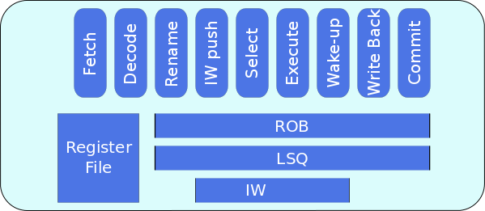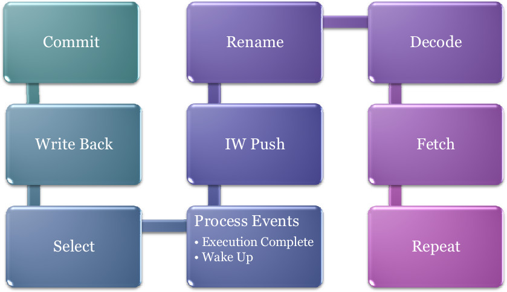
The out-of-order pipeline is made up of the following stages :
Wake-up Select Logic
Wake-up Select logic allows an instruction j waiting for instruction i’s result, to begin execution in the immediately next cycle after instruction i completes execution. When, instruction i completes, it wakes up all dependent instructions. It’s result is forwarded to the dependent instruction through the by-pass path, essentially storage associated with the functional units.
The wake-up signal is modelled as an event, “Broadcast Event”, as it’s time cannot be statically determined. In simulation, Select is performed before the events are processed. Therefore, the broadcast event is scheduled at the same time as the execution complete event. Doing this would set the availablility of the operand in this cycle (the cycle when the producing instruction completed execution). This instruction then becomes a candidate for selection in the next cycle.
Two cases exist that require special handling :
To provide for these, a second broadcast event is scheduled in the clock cycle just preceding the one when i completes execution. This ensures the desired behavior.
Simultaneous Multi-Threading (SMT)
The out-of-order pipeline is capable of simultaneous multi-threading. The pipeline is provided with decode width (configurable) number of input queues that the translator can populate -- each queue corresponds to one thread. The pipeline reads from these queues in round-robin fashion -- one queue each cycle. Each instruction has a thread id field to help distinguish it when data dependencies are handled. When one thread faces a branch mis-prediction, all threads are stalled for the predefined penalty period.
Tejas is highly flexible in terms of specifying the memory heirarchy. The heirarchy is essentially an inverted tree of caches. Each cache may be data, instruction or unified. They may be private to one core, shared among a subset of cores or shared among all cores -- high flexibility is provided in this respect. Write modes of "write-back" and "write-through" are supported. The size, latency, associativity, block size, port type, port occupancy, number of ports and MSHR size can be configured.
Directory-based cache coherence is provided in Tejas, which follows the MESI protocol. The user may specify at which level in the heirarchy she wishes the coherence to be applied. The main memory (off-chip RAM) is simulated trivially as a fixed latency structure. However, the interface to the main memory is through on-chip memory controllers, and the ports on these controllers are simulated accurately.
Non-uniform Cache Architecture
Today’s high performance processors incorporate large level-two (L2) caches on the processor die. These sizes will continue to increase as the bandwidth demands on the package grow, and as smaller technologies permit more bits per mm2. In future technologies, large on-chip caches with a single, discrete hit latency will be undesirable, due to increasing global wire delays across the chip. Data residing in the part of a large cache close to the processor could be accessed much faster than data that reside physically farther from the processor.
Types of NUCA
-
Static NUCA- Data are statically mapped into banks. S-NUCA caches
static mappings of data to banks and the banks have non-uniform access
times.
-
Dynamic NUCA- The future cache access non-uniformity can be expolited
by placing frequently accessed data in closer (faster) banks and less
important–yet still cached–data in farther banks. There are three
important questions about the management of data in the cache:
-
mapping: how the data are mapped to the banks, and in which banks a datum can reside
-
search: how the set of possible locations are searched to find a line,
-
movement: under what conditions the data should be migrated from one bank to another.
- Static NUCA- Data are statically mapped into banks. S-NUCA caches static mappings of data to banks and the banks have non-uniform access times.
-
Dynamic NUCA- The future cache access non-uniformity can be expolited
by placing frequently accessed data in closer (faster) banks and less
important–yet still cached–data in farther banks. There are three
important questions about the management of data in the cache:
- mapping: how the data are mapped to the banks, and in which banks a datum can reside
- search: how the set of possible locations are searched to find a line,
- movement: under what conditions the data should be migrated from one bank to another.
Cache-Core Topology
Our implementation of NUCA follows tiled architecture. Each tile contains a core, a L1 cache , a L2 cache bank and a router.The routers are connected in a 2D-Mesh topology. L2 cache is distributed and each bank has its own local cache controller to handle requests from different cores and caches. In our implementation, each row in the design layout below is a bank-set.
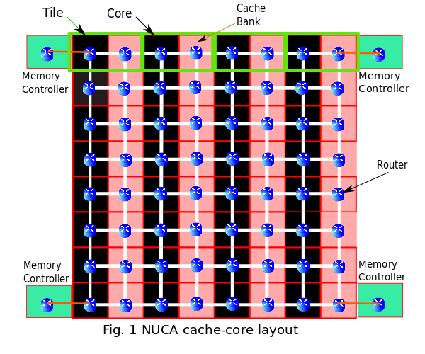
Policies in S-NUCA
S-NUCA follows the same strategies for both placement and searching. The requesting core directly sends the request to the statically determined bank based on the low-order bits of tag as shown in Fig.2. If a miss occurs at the bank, the request is immediately forwarded to the nearest memory controller. The data block from main memory is placed on this statically determined bank. S-NUCA does not have any migration policy, the evicted block from the cache bank is evicted from the LLC and written back to main memory.
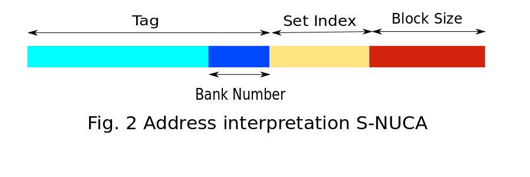
Policies in D-NUCA
Like in S-NUCA, in D-NUCA low-order bits of tag determines the bank number. In addition, it is further broken down into two parts - 1) Bank-set number 2) Bank Number within set. A data block can be placed in any of the banks within the bank-set.
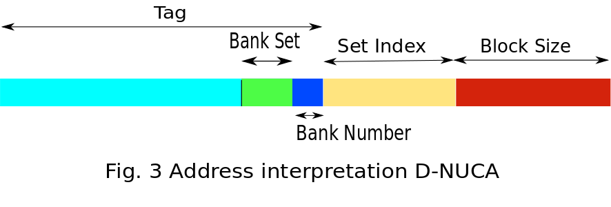
- Placement - In this strategy of block placement, when a cache miss occurs data from main memory is kept at the bank of the bank set nearest to the core.
-
Searching - Data request is broadcasted to all the cache banks present
in the bank-set. To restrict network traffic within the bank-set only.
A unicast request is sent to the bank within the bank-set closest to
the core. If a miss occurs, it broadcasts the requests to all other
banks in the bank-set.The steps are shown in figure 4 below.
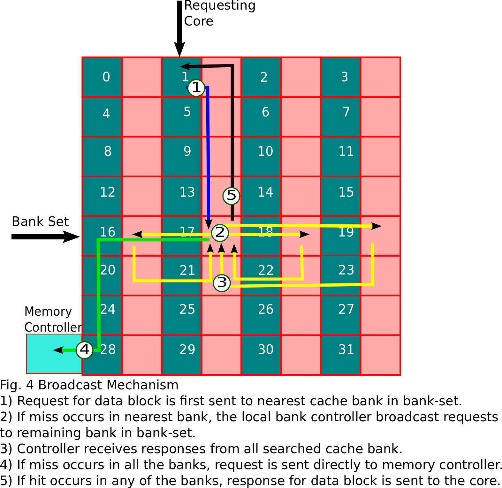
-
Migration - In order to reduce the access latency in D-NUCA searching
schemes, we have used bank-set level block migration. When a hit occurs
for a block in the bank of bank-set, the block is migrated to the bank
closer to the core (upward migration). If same block is accessed
multiple times, the data block migrates to bank closest to core. We are
not doing any downward migration in our scheme. When a block is evicted
from the bank it is not migrated to bank farther from core instead the
block is written back to the main memory. The mechanism is shown below
in figure 5.
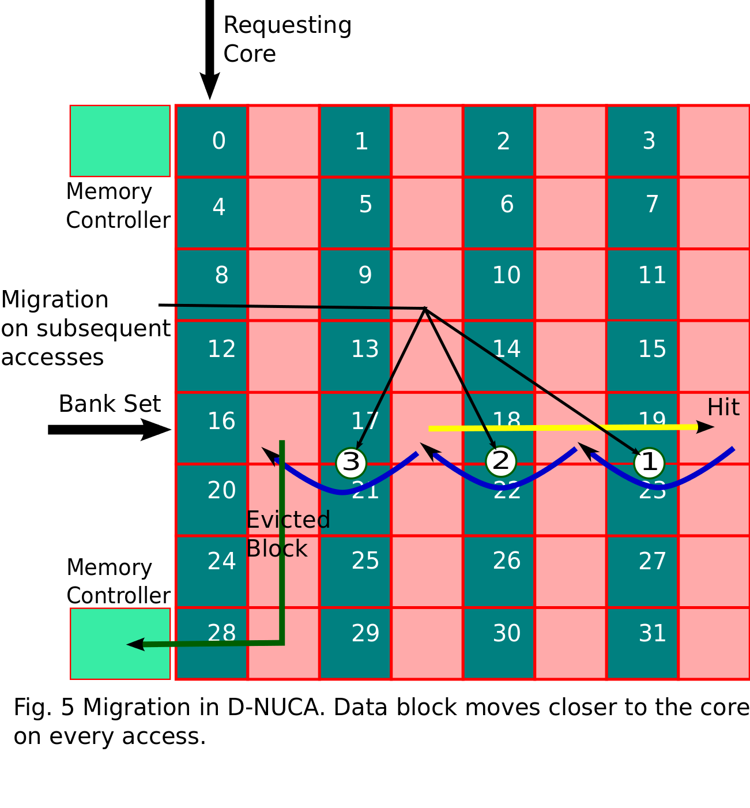
Tejas has a generic NOC implenetation that can connect components like cores, cache banks, directories. Two media are supported : electrical and optical.
A variety of topologies are implemented in Tejas :
Likewise a range of routing algorithms are provided :
Like all other structures, the NOC is also highly configurable. The user can specify shape (dimensions) of the interconnect. The router latency, hop latency, router buffer capacity is configurable.
Tejas supports both static and dynamic routing schemes -- dynamic routing takes into account link congestion and selects the best among available routes. Tejas' NOC is currently a packet-switched network.
Tejas employs the McPAT power model. The user is expected to use this tool and provide the static and dynamic power numbers for the different structures to Tejas through the configuration file. Tejas performs due aggregation of energy consumed based on the activity of the structures, and provides energy numbers at various granularities.